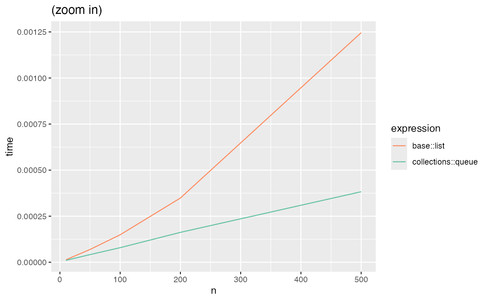
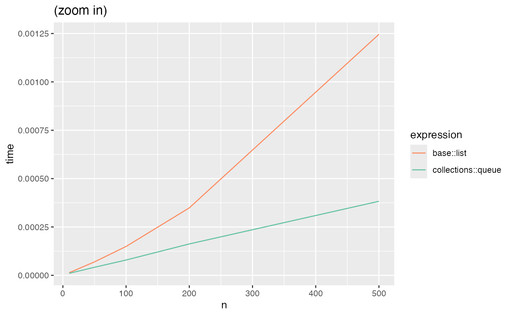

The goal of this document is to compare the performances of some of the existing packages.
-
dequer 2.0-1implements double ended queues and it supports arbitrary R objects. However, it uses
R_PreserveObjectandR_ReleaseObjectheavily which could be an issue for long queues.
- datastructures 0.2.8 uses ‘Boost’ and ‘STL’ data types to implement queues and hashmaps. For some reasons, it is often slow as shown in the benchmark.
- liqueueR 0.0.1 implements queues in pure R code which explains its slowness.
- hash 2.2.6.1 uses R environments to create hash tables. It is known that regular R enviroments leak memory.
- hashmap 0.2.2 provides hashmap for atomic vectors using boost library.
- fastmap 1.0.1. The current implementation of collection::dict is actually inspired by it. However, a more efficient hash table library tommy is used.
- We also compare to serveral base R implementations based on lists or environments, see here for details.
 
